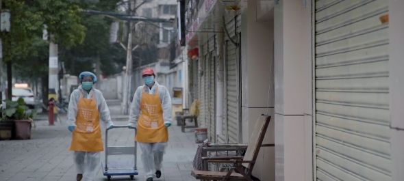
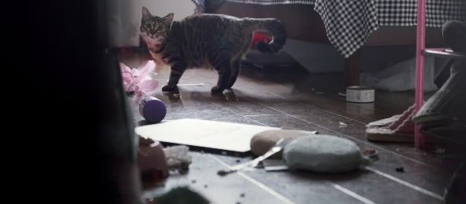

武汉封城后，我每天坐志愿者的车上下班
原文链接 备份链接 “ - 疫 情 之 下 - 武汉的疫情就像一簇紧簇的乌云，笼罩在每一个人的心头。但所幸，在这个受伤的城市中，在每台志愿者车里，在疲于奔波的路上，总有那么一群可爱的人，温暖着我们前线医护工作者的心。 ” 1 2020年 …

非常时期
他们的存在是照亮黑暗的光

在武汉坚守工作岗位的普通人
户外探险队志愿者大象，打开后备箱，打开一个水果罐头，将糖水一饮而尽。
1月23日武汉封城，1月26日，武汉实行中心城区机动车禁行管理，出租车停运，医护人员的住址分布在武汉三镇，上下班通行成了问题。户外探险队的大象报名加入志愿者车队，接送医护人员上下班。
用车高峰期，大象经常一天工作十几个小时，他吃个水果罐头补充能量，继续开车奔走在空旷的城市街道上，成为了“摆渡人”，连接起生活的希望。
跟大象一样的人，在武汉，还有很多，他们是医护人员、理发师、外卖员、开锁师傅、救护车司机、志愿者……
纪录片《在武汉》讲述了非常时期下，生活在武汉的普通人的日常生活，展现从病患到医护工作者在这场疫情中面对的一切，自2月26日起在B站开播，已更新2集。
守望相助
出现在《在武汉》第1集《车轮上的生命线》的女司机李少云，是周迅主演的微电影《女儿》的原型，她是生活在武汉的单亲妈妈，长年带着女儿依依开夜班出租车，风雨无阻。
疫情来袭，武汉出租车停运，李少云也想贡献自己的一份力量，报名加入志愿者车队，但是一直都没有通过。
于是李少云就帮忙为武汉志愿者车队协调信息，“像我们没有车的，又想出一份力，就在群里面收发一些需求信息。”
年幼的依依想出去玩，李少云安慰她，外面有病毒，待在家里才是安全的。
突如其来的新冠肺炎疫情，强行扭转了每一个武汉人的日常生活轨迹。
“平常都说冒着生命危险，那都是形容词，这一次是百分之两百的，百分之三百的，百分之五百的，绝对不是形容词。”大象深知加入志愿者车队的危险。

志愿者开车接送乘客
同样报名当志愿者的出租车司机陈杰也说：“说不害怕那是假的。”
妻子担心陈杰，跟儿子在家牵挂着陈杰的安全，“你是我们的全部，你完了我们都完了。”陈杰还跟妻子开玩笑，“我在给你攒嫁妆呢。”
每一个生活在武汉的普通人，都在跟疫情做斗争，虽然不知道胜利的那一天何时会到来，但依然在坚持着。
大象跟同伴们互相打气，“坚持啊，坚持。”他希望大家都能平安。
一直在帮忙协调物资的志愿者丹丹生病了，让大象和其他同伴都很揪心。“她帮了那么多人，我一定要去帮她。”
大象和丹丹此前并不认识，也没有见过面，在特殊时期更不能走近，他带着药和菜去看望丹丹，把物资放在小区的长椅上，就坐回车里等丹丹下楼。
丹丹没有精神，下楼一趟喘得像一个80多岁的老奶奶。
大象看到虚弱的丹丹，眼泪止不住地流，“有很多熟悉的、不熟悉的人，一个个地离开，这一次真的，大家都很沮丧，而且不知道方向，不知道是不是黎明前的黑暗。”
但大象的车轮并没有停下来，他依旧坚持工作，“我想总得有一束光，照亮大家前行的路。”
坚守岗位
第2集《这不只是工作》讲述了在疫情时期仍然坚守岗位的普通人，他们是外卖员、开锁师傅、理发师、卡车司机……
武汉封城后，外卖员王建工作的站点，只剩下10个人在工作，他接到了一个特殊的订单——帮忙遛狗，狗狗陈皮的主人是孕妇。

外卖员送货
疫情期间，遛狗也成了危险的活动，王建每天晚上都要去陈皮家里接它出来，遛一圈再送它安全到家，这只金毛犬体型庞大，但性格却非常温顺。
外卖员徐晶晶也接到了大量的代购订单，她明显地感觉到，自1月20日起，药店的口罩就卖断货了，再往后帮客户买药，也经常需要跑好多家店，才能买齐。
让徐晶晶印象深刻的一个订单，来自一位老先生，他需要30毫升的胰岛素，因为他不会用手机下单，辗转了很久才在别人的手机上下了一单，他很着急，徐晶晶只好一边跑单一边安慰这位急需胰岛素的老人。
徐晶晶自从武汉封城后，就一直在外面跑，她感觉疫情让人与人之间的距离变远了，但是心却更近了，“平时大家点外卖图个方便，现在代购了之后，很多顾客一连几次都在找我。”

滞留武汉的猫
留在武汉过年的开锁师傅易松山，整个春节期间都非常忙碌，他接到的90%的开锁工作，都是去客户家上门喂猫。
他进门之前就会给宠物主人打视频电话，给对方看家里的情况以及猫的现状，他日益娴熟地掌握了铲猫砂和换水、添粮的一整套动作，如果客户家里猫粮不足，他还会带猫粮上门，让嗷嗷待哺的小猫吃个痛快。
易松山感慨，很多人看到他的猫之后，伤心的流泪，看到自己救活他的猫，感动的流泪。
理发师宋忠桥也在疫情期间挺身而出，为援鄂医疗队的医护人员理发，让他们能安心上一线，救更多的病患。
疫情时期，理发成为刚需。此前，宋师傅从没想过，理发也会保护医护人员的安全。
宋师傅温柔地帮助女医护剪掉长发，并把剪下来的长发拿给她们留作纪念，“我想在保护他们的情况下，去帮忙把发型设计好。”
剪掉长发的女医护们也非常乐观，“换个新发型也挺好。”
不能忘记
武汉是一座千万人口的城市，每一个挺身而出的志愿者，都在为武汉能够正常运转，贡献出自己的力量。
他们对抗病毒，也在对抗自己对病毒的恐惧。
纪录片《在武汉》记录下了他们每一个人面对疫情时的勇敢、焦虑、恐惧、乐观……
大象依然坚持每天运送物资、接送医护人员，他一边开车一边平静地说：“身后就是家人、朋友、乡亲……汶川我都去救助过，现在是在生我养我的城市。真的牺牲了，也是为自己的家乡，不亏。”
因为篇幅所限，很多素材并没有进入《在武汉》的正片，作为花絮单独剪辑出来。其中，从福建三明开车送货到武汉的司机吴国水，令很多网友感动。
他第一趟自费出车到武汉，家人不理解，房东也不要他回去，积蓄也花光了。
但是吴国水没有后悔，他觉得做善事就是尽自己的一份力，别人怎么说、怎么看不重要，当他把物资运送到武汉后，拍视频留念时，他也说不要提他的名字，只说武汉加油就好。
正如主创团队所说的，8集纪录片《在武汉》想要表达的是，“民胞物与，念兹在兹。” 每一个为抗击疫情做过贡献的人，都不应该被忘记。同样，这场疫情带来的反思，也不能被遗忘。
图片来源：纪录片《在武汉》截图
值班编辑：俞杨
推荐阅读
▼


原文链接 备份链接 “ - 疫 情 之 下 - 武汉的疫情就像一簇紧簇的乌云，笼罩在每一个人的心头。但所幸，在这个受伤的城市中，在每台志愿者车里，在疲于奔波的路上，总有那么一群可爱的人，温暖着我们前线医护工作者的心。 ” 1 2020年 …
原文链接 备份链接 - 疫 情 之 下 - 如今，针对医护人员的出行难，政府已出台各种措施，但还是有个别的需求难以得到满足。高宇说，他会一直坚持到医护人员交通困难问题缓解的那一天。 ” 2020年1月23日，武汉市新型冠状病毒感染的肺炎疫 …
原文链接 备份链接 武汉封城以后，民间的心理咨询师就开始介入，为第一批被撤换下来的医护人员做心理疏导。2月初，各地的医疗救援队开始带上精神科医生。 汶川地震时，一线的医护人员15天左右要轮换，否则会引发严重的焦虑情绪。但这次，部分医护 …
原文链接 备份链接 每个人用自己的方式在守护 为武汉，也为自己 凌晨四点，梦乡深处的人们是否想过，此时的武汉，此时的协和医院，是怎样的场景。 截至2月19日，武汉协和医院西院累计收治新冠肺炎患者1055名，其中重症、危重症患者占 …
原文链接 备份链接 有救援经验的社会组织，响应了。 武汉宣布封城后三小时，郝南就在社交媒体上发布了nCOV Relief（后改名NCP生命支援）志愿者招募书，发起新冠肺炎患者和疑似病人居家隔离治疗项目。郝南身在北京，是卓明灾害信息服务中 …